About Us

 Our Idea
Our Idea
Fikra, which means “Idea” in Arabic, was visualized in 2010 as a company that would promote creative and youthful activities in Kuwait and the Middle East. Most importantly it targeted the gaming industry and set out to lay the foundation for the Kuwaiti gaming industry and build it; from artists and programmers, to cosplayers and pro gamers and everything in between.
And on a fateful October in 2011, an opportunity that came suddenly became Fikra’s first event. Although the event was not planned, budgeted, or marketed, it was a massive success and Fikra became known worldwide as a result.
Beginnings
Kuwait already had a very strong fighting game community since the 1990’s. Fikra decided to start with fighting game tournaments as a way of growing the local community and getting experience for much bigger events that would come later in Fikra’s future.
In addition to this, Fikra was the first to organize a major gaming event with live broadcast and commentary, as well as sending Kuwaiti players to countries such as Australia and Japan to represent Kuwait in their respective major fighting game tournaments.
Now with all this experience, exposure, and good will with the community, Fikra in 2012, decided to take its next major step and create its first unique event, and the Middle East’s first and largest fighting game tournament. Kuwait Battle Royale.
Some of the events that Fikra organized in it’s first 12 months are:
DAIGO UMEHARA STREET FIGHTER 4 & MARVEL VS CAPCOM 3 EXHIBITION:
SHADOWLOO SHOWDOWN KUWAIT QUALIFIERS
TOUGEKI KUWAIT QUALIFIERS
Fighters Units

Kuwait Battle Royale (KBR) was unlike any gaming event done in the Middle East at the time. With participants from all over the world, prizes exceeding 3,000KD (10,000$), and Kuwait’s first cosplay contest, it was an event never to be forgotten. It was the event that finally cemented Fikra’s place not only in the local/regional scene, but the international one as well.
The memories of Kuwait Battle Royale stick in people’s minds thanks to the nail biting exhibition matches and the historic grand final matches. Kuwait Battle Royale is now considered the premier fighting game tournament of the Middle East.
The memories of Kuwait Battle Royale stick in people’s minds thanks to the nail biting exhibition matches and the historic grand final matches. Kuwait Battle Royale is now considered the premier fighting game tournament of the Middle East.
After Kuwait Battle Royale and a few other events, Fikra could finally start working on the event that it had planned from the very beginning of its inception, Kuwait’s first gaming expo.
The Games & Media Entertainment Expo (GX) started in 2014, and combined everything Fikra has done up to that point to create the biggest event of its kind in Kuwait. Whatever doubts people in Kuwait and outside of Kuwait had about the gaming industry in Kuwait and the Middle East were crushed by the record attendance and participation at GX.
Everyone from game developers, artists, gamers, cosplayers, and more, celebrated gaming in Kuwait and came together as one community to show their passion and skills to the world.
Fikra started video production at the end of 2012 as a way to showcase and expose the gaming community in Kuwait. First it started with a short documentary/interview with pro players during Kuwait Battle Royale 2012, then moved onto short and quick video reports summarizing events, as well as motivational videosand computer graphics trailers for upcoming events.
Fikra plans to increase video production in the future, specifically more documentaries and CG trailers related to either the gaming industry or Fikra’s own events. You can find our videos on our YouTube channel:
After Kuwait Battle Royale and a few other events, Fikra could finally start working on the event that it had planned from the very beginning of its inception, Kuwait’s first gaming expo.
The Games & Media Entertainment Expo (GX) started in 2014, and combined everything Fikra has done up to that point to create the biggest event of its kind in Kuwait. Whatever doubts people in Kuwait and outside of Kuwait had about the gaming industry in Kuwait and the Middle East were crushed by the record attendance and participation at GX.
Everyone from game developers, artists, gamers, cosplayers, and more, celebrated gaming in Kuwait and came together as one community to show their passion and skills to the world.
Our Future
With the foundation for the industry now set, and with multiple successful events year after year, Fikra will continue to grow and expand upon the foundations it has laid, and will always strive to set a high standard in the fields that it enters.
With the biggest events in Kuwait and the Middle East, Fikra plans to add Kuwait as a yearly destination for visitors and exhibitors.
